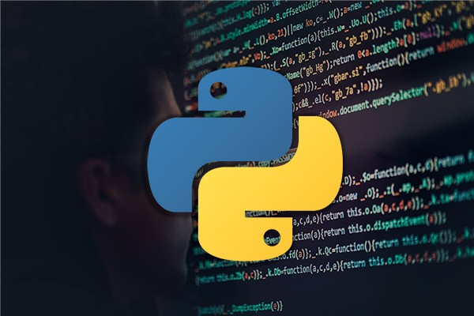

Gracias por visitar esta seccion
Aca vas a encontrar algunos de mis trabajos. Sitios web completos, un sistema de reserva de turnos hecho con Django. Trabajos de Cursos con Python POO y Mysql. Entre otros tambien trabajos de la facultad a la que asisto UTN frgp
Sitios Web
La tercera imagen lleva a una pagina web hecha en Django al hacer click sobre ella o su boton aparecera un alert indicando los usuarios y contraseñas de los doctores y secretarias para que puedas usar el sistema por tu cuenta. Conociimientos aplicados del curso Full stack dictado por Polotic (Silicon Misiones).El certificado se encuentra en la seccion info de la barra del menu principal.
Trabajos Practicos hechos en UTN
Esta seccion contiene 7 trabajos practicos hechos en C++ entre todos los trabajos practicos juntos hay un total de 90 ejercicios, cada trabajo practico contiene las consignas de todos los ejercicios que lo forman, se encuentran en un archivo PDF dentro de la misma carpeta. Tambien vas a poder encontrar la consigna de cada ejercicio en la misma carpeta que lo contiene
Trabajo practico de UTN juego de dados
Se trata de un juego de dados hecho en C++ ejercicio de final de cuatrimestre de la UTN la consigna y el planteamiento logico que pide el juego se encuentra en un archivo PDF dentro de la misma carpeta.

Ejercicios Python POO
Esta seccion cuenta con 7 ejercicios hechos en Python, las consignas estan dentro de las carpetas de los archivos y tambien en la raiz de los mismos. Curso Python POO dictado por Fablab
